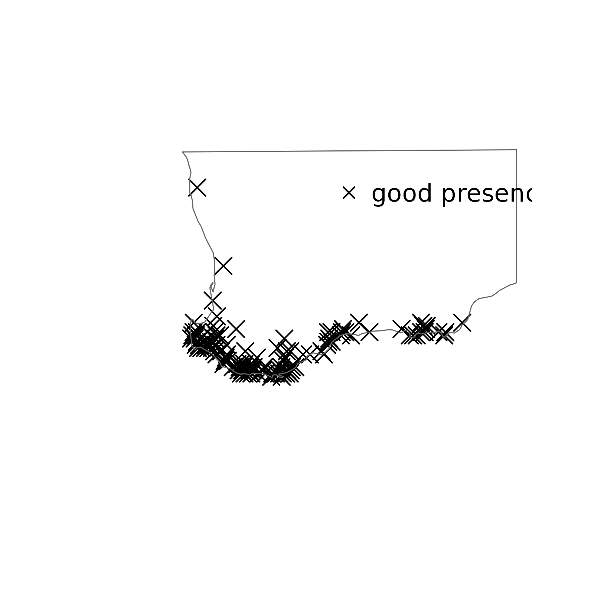

occOutlierR: Identifying outlying species occurrence records
Cory Merow, Gonzalo E. Pinilla-Buitrago
2024-09-09
occOutlier.RmdOutlier Detection in Species Distribution Modeling
Species distribution models (SDMs) are widely used in ecology to predict the potential distribution of species across different environments. However, building accurate SDMs can be challenging due to the presence of outliers in occurrence data. Outliers are records that deviate significantly from other observations and can have a substantial impact on model predictions.
The difficulty of detecting outliers lies in their unpredictability. They can arise from measurement errors, sampling processes, or skewed distributions. Small sample sizes exacerbate this issue, making it challenging to identify outliers using traditional descriptive statistics such as boxplots and percentiles. Furthermore, the presence of disjunct clusters of outlying records (known as “masked outliers”) can make detection even more difficult.
In this vignette, we will show several approaches for identifying and dealing with these issues by examining various methods for detecting outliers spatial and environmental outliers. The goal is to provide a comprehensive overview on how to effectively address these issues using adaptable outlier detection methods.
Detection of outliers
Outliers are identified based on their distance from other observations in either geographic or environmental space. A multivariate distance metrics, such as Euclidean distance, are used to measure the distance between each record and the centroid of all observations. One-tailed tests for outlier detection are designed to detect exceedingly large distances which are practical for automation in modeling pipelines.
Spatial
To calculate spatial outliers, we need to use a method that takes
into account the spatial relationships between observations. This can be
achieved by calculating the distances between each observation and the
centroid of all observations. We require an sf object with
a defined Coordinate Reference System (CRS) for this calculation. If the
CRS is projected, we will use Euclidean distance as a measure of
distance. However, if the CRS is geographic, we will use Great Circle
distance to account for the curvature of the Earth. The
occOutlier package uses sf::st_distance()
internally to perform these calculations, which provides a convenient
interface for working with spatial data in R.
In these vignette’s examples, we will use species geographic coordinates (WGS84). Each CSV file contain the coordinates of each observation (‘X’ and ‘Y’), plus more columns with environmental data which will be use in upcoming examples. For this first example, we will use Astraea macroura to detect spatial outliers.
a_macroura <- read.csv(system.file('extdata/Astraea_macroura.csv',
package = 'occOutliers')) |>
sf::st_as_sf(coords = c("X", "Y")) |>
# Set WGS84
sf::st_set_crs(4326)
plot(a_macroura[1])´occOutlier´ offers four methods to detect outlier based on their distance to the centroid.
- ‘iqr’: Interquartile range
- ‘grubbs’: The Grubb’s outlier test
- ‘dixon’: The Dixon’s outlier test
- ‘rosner’: The Rosner test for multiple outliers
Interquartile range (IQR)
The IQR method calculates the difference between the 75th percentile (Q3) and the 25th percentile (Q1). Data points more than 1.5 times this range away from Q1 or Q3 are typically considered outliers. This simple yet effective approach helps identify data points that significantly deviate from the rest of the dataset, making it a useful tool in outlier detection.
The main function of the package is findOutliers(). The
main input is a sf object with coordinates. Then, you can
define if you want to detect spatial or environmental outliers with
their respective parameters (both TRUE as default). And finally you can
define the method to detect outliers with the ‘method’ parameter. Here,
we will use ‘iqr’.
sp_iqr <- findOutliers(a_macroura, environmental = FALSE, method = "iqr")## [1] "2 geographic outlier(s) found with method iqr"As you notice for the message, two outliers were detected using this method. The output of the function is the same object with an additional column (out_spatial), that allow you to know which are the outliers.
sp_iqr$out_spatial## [1] FALSE FALSE FALSE FALSE FALSE FALSE FALSE FALSE FALSE FALSE TRUE FALSE
## [13] FALSE FALSE FALSE FALSE TRUETo visualize, you can plot the points using plot() function.
plot(sp_iqr["out_spatial"])This package also provide the plotOutlier function to
easy visualize the result by adding a shapefile.
# Load world shapefile
worldWGS84 <- readRDS(system.file('extdata/worldWGS84.rds',
package = 'occOutliers'))
# Get outlier plot
plotOutliers(sp_iqr, shpToPlot = worldWGS84)## Warning: attribute variables are assumed to be spatially constant throughout
## all geometriesAs a tip, keep in mind that the plotOutlier() function has two useful parameters that allow you to expand the shapefile buffer around coordinates (bufferDist), and change the legend position (legLoc).
plotOutliers(sp_iqr, legLoc = "bottomright", bufferDist = 0.4,
shpToPlot = worldWGS84)## Warning: attribute variables are assumed to be spatially constant throughout
## all geometriesThe Grubb’s outlier test
The Grubbs test is a statistical method used to detect outliers in a
dataset. It calculates the distance between each data point and the mean
of the remaining data points, then determines which data points are
farthest away from the mean. This test is useful when there are multiple
outliers in the dataset or when the data distribution is skewed. This
test is the default method for findOutlier().
sp_grubbs <- findOutliers(a_macroura, environmental = FALSE)## [1] "1 geographic outlier(s) found with method grubbs"Here, it was just detected one spatial outlier.
plotOutliers(sp_grubbs, shpToPlot = worldWGS84)## Warning: attribute variables are assumed to be spatially constant throughout
## all geometries
The Dixon’s outlier test
Dixon’s test is a statistical method used to detect single outliers in a dataset. It calculates the difference between the largest and smallest values, then compares this range to a critical value from a standard normal distribution. This test assumes that there are no multiple outliers, so it may not be suitable for datasets with complex outlier patterns.
sp_dixon <- findOutliers(a_macroura, method = "dixon", environmental = FALSE)## [1] "1 geographic outlier(s) found with method dixon"
plotOutliers(sp_dixon, shpToPlot = worldWGS84)## Warning: attribute variables are assumed to be spatially constant throughout
## all geometriesRosner’s Test
Rosner’s test is a statistical method that detects single or multiple outliers in a dataset by calculating the modified Z-score of each data point. It provides an effective way to identify anomalies in datasets with large sample sizes or complex distributions, while being robust against non-normality and heavy-tailed distributions. This test requires that you define the number of outliers to test (parameter ‘kRosner’)
sp_rosner <- findOutliers(a_macroura, method = "rosner", kRosner = 2,
environmental = FALSE)## [1] "2 geographic outlier(s) found with method rosner"
plotOutliers(sp_rosner, shpToPlot = worldWGS84)## Warning: attribute variables are assumed to be spatially constant throughout
## all geometries
Keep in mind that you also can change the p-value for assessing the significant of the test for ‘grubbs’, ‘dixon’, and ‘rosner’. Default is 1e-05. If we change to a smaller pval in the previous test, no outliers will be detected.
sp_pval <- findOutliers(a_macroura, method = "rosner", kRosner = 2,
environmental = FALSE, pval = 1e-06)## [1] "0 geographic outlier(s) found with method rosner"
plotOutliers(sp_pval, shpToPlot = worldWGS84)## Warning: attribute variables are assumed to be spatially constant throughout
## all geometriesEnvironmental outliers
Similar to the process of finding spatial outliers, you can use the
same four methods to find environmental outliers. However, for this
process you will also be able to select several ways to measure the
distance between the centroid and the observations (‘distEnvMethod’
parameter), and if you which to scale data (‘scaleData’; default is
TRUE). The output will be an sf object with a new column
‘out_env’.
For this example, we will use Anarthria scabra using Scrubb´s test but changing the method to measure distance bewteen centroids.
A_scraba <- read.csv(system.file('extdata/Anarthria_scabra.csv',
package = 'occOutliers')) |>
sf::st_as_sf(coords = c("X", "Y")) |>
# Set WGS84
sf::st_set_crs(4326)
plot(A_scraba[1])Euclidean distance
The Euclidean distance is a measure of the straight-line distance between two points in n-dimensional space, calculated as the square root of the sum of squared differences between corresponding coordinates.
e_euclidean <- findOutliers(A_scraba, spatial = FALSE)## [1] "1 environmental outlier(s) found with methods grubbs and euclidean (distance)."Here, one environmental outlier is detected, which correpons to the northern observation.
plotOutliers(e_euclidean, shpToPlot = worldWGS84, legLoc = "topright")## Warning: attribute variables are assumed to be spatially constant throughout
## all geometries
Manhattan distance
The Manhattan distance (also known as L1 distance) is a measure of the sum of absolute differences between corresponding coordinates of two points in n-dimensional space. It’s named after the grid layout of New York City streets.
e_manhattan <- findOutliers(A_scraba, spatial = FALSE,
distEnvMethod = "manhattan")## [1] "0 environmental outlier(s) found with methods grubbs and manhattan (distance)."
plotOutliers(e_manhattan, shpToPlot = worldWGS84, legLoc = "topright")## Warning: attribute variables are assumed to be spatially constant throughout
## all geometries
Cosine
The Cosine Dissimilarity measures the similarity between two vectors by calculating the cosine of the angle between them, resulting in a value between -1 and 1, where higher values indicate more similar vectors.
e_cosine <- findOutliers(A_scraba, spatial = FALSE,
distEnvMethod = "cosine")## [1] "0 environmental outlier(s) found with methods grubbs and cosine (distance)."As the Manhattan distance example, it was not detected an environmental outlier.
Mahalanobis
The Mahalanobis distance is a measure of the distance between a point and a distribution, taking into account the covariance between variables. It’s used to detect outliers in multivariate data by calculating how far a point is from the center of the distribution while accounting for its spread and correlations.
e_mahalanobis <- findOutliers(A_scraba, spatial = FALSE,
distEnvMethod = "mahalanobis")## [1] "1 environmental outlier(s) found with methods grubbs and mahalanobis (distance)."
plotOutliers(e_mahalanobis, shpToPlot = worldWGS84, legLoc = "topright")## Warning: attribute variables are assumed to be spatially constant throughout
## all geometriesSpatial & Environmental
You can also detect both types of outliers in an unique call. Here, we will use Camissonia_tanacetifolia as an example.
C_tanacetifolia <- read.csv(system.file('extdata/Camissonia_tanacetifolia.csv',
package = 'occOutliers')) |>
sf::st_as_sf(coords = c("X", "Y")) |>
# Set WGS84
sf::st_set_crs(4326)
out_C_tana <- findOutliers(C_tanacetifolia)## [1] "1 geographic outlier(s) found with method grubbs"
## [1] "1 environmental outlier(s) found with methods grubbs and euclidean (distance)."In this example, it was detected two outliers, one spatial and one environmental, but they correspond to the same observation.
plotOutliers(out_C_tana, shpToPlot = worldWGS84, legLoc = NULL)## Warning: attribute variables are assumed to be spatially constant throughout
## all geometriesChanging the p-value to 0.05 (a lower value), you are able to detect four outliers. One exclusively spatial, one exclusively environmental, and two other that are outliers in the geography and in the environment.
out_pval <- findOutliers(C_tanacetifolia, pval = 0.05)## [1] "3 geographic outlier(s) found with method grubbs"
## [1] "3 environmental outlier(s) found with methods grubbs and euclidean (distance)."
plotOutliers(out_pval, shpToPlot = worldWGS84, legLoc = NULL)## Warning: attribute variables are assumed to be spatially constant throughout
## all geometries